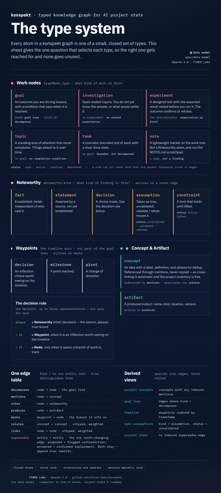
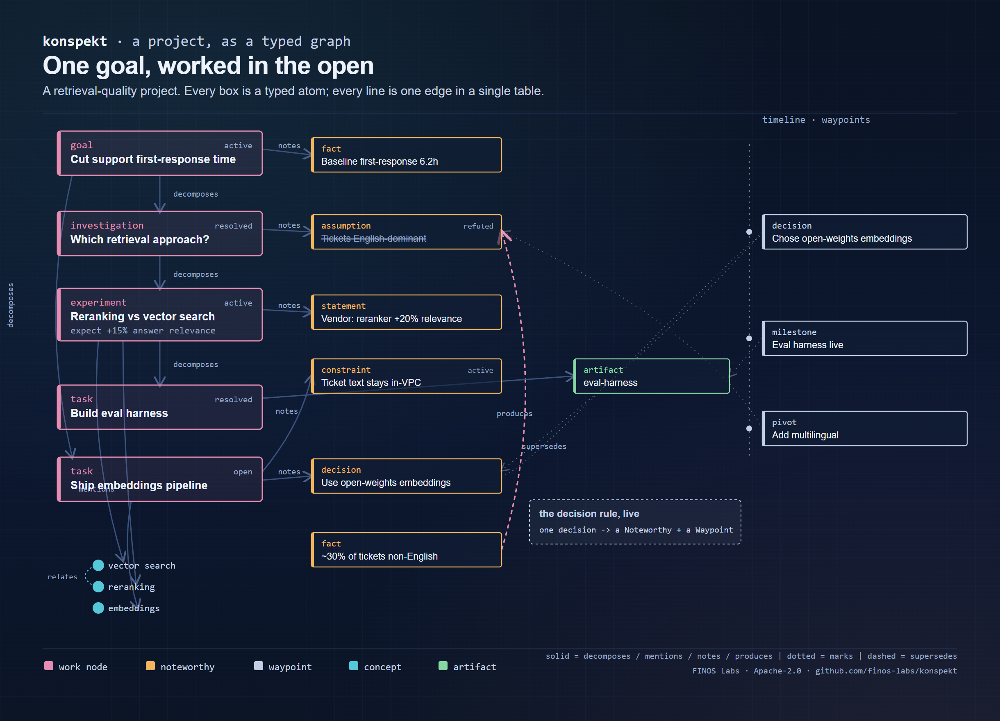

Last week we reposted our FINOS Labs blog introducing konspekt: a portable, git-backed typed knowledge graph for AI project state.
Since then, we have shaped up the roadmap: accountability, collaboration, curated context, following the thread, observability, portability, and usability. We have focused on adoption through usability and took two steps toward that.
The data model itself has not changed; what was missing was a way to teach it. Every atom in the graph is one of a small, closed set of types, and each type answers one question:
There is now one sheet that lays this out:
[IMAGE images/type-system-poster.png — insert here via LinkedIn's image button]

— plus a worked example: a small project where every box is a typed atom and every line is one edge in a single table.
[IMAGE images/graph-example.png — insert here via LinkedIn's image button]

The LLM that watches a session got sharper rules for when something has settled enough to capture, and which type to reach for. That second part matters more than it looks. With no rule separating an experiment from an investigation, or a constraint from a fact, the LLM never proposes the rarer types, so they sit empty and the data model loses half its vocabulary in practice. The new rules close that gap. The human still accepts every atom; the LLM only proposes.
We also added two queries over the graph, run from the command line for now with a proper interface still ahead: goal state (the sub-graph under a goal, every node with its status) and provenance chain (for any atom, the source it came from and everything it replaced, each hop checked by re-hashing the source against its recorded hash).
All of it is on main: github.com/finos-labs/konspekt
#AI #KnowledgeGraphs #OpenSource #FINOS #konspekt